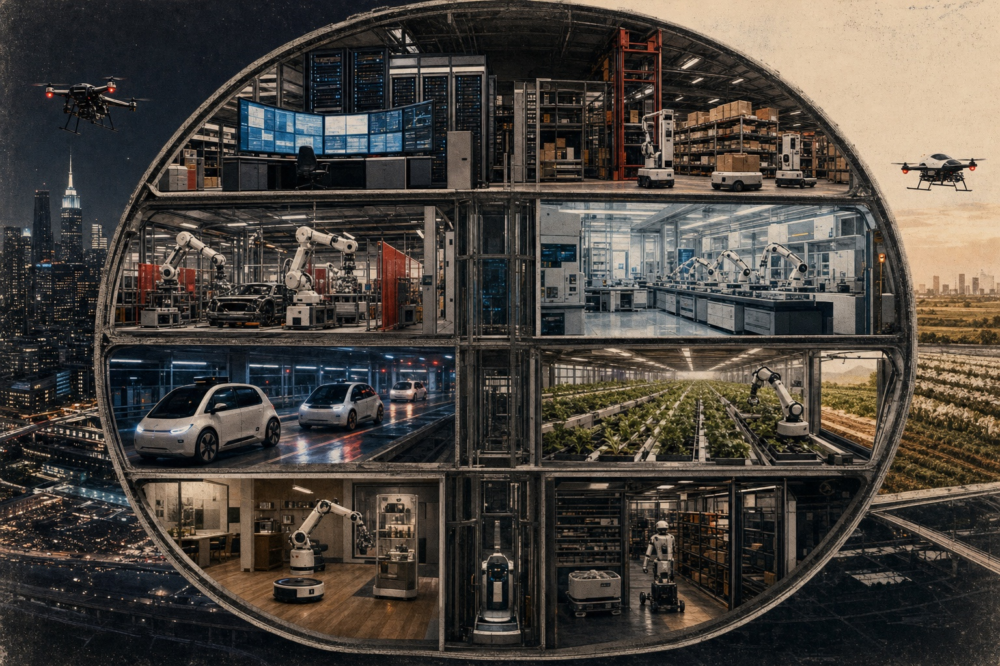
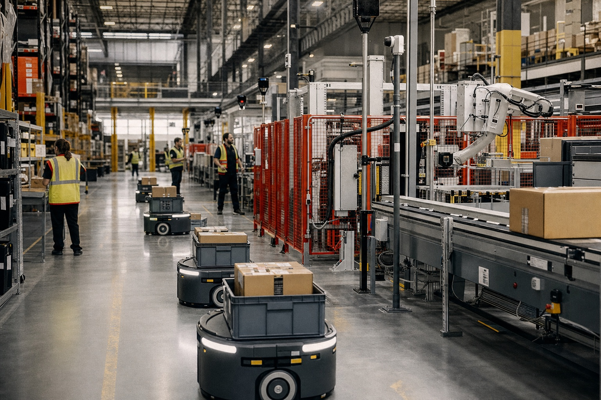
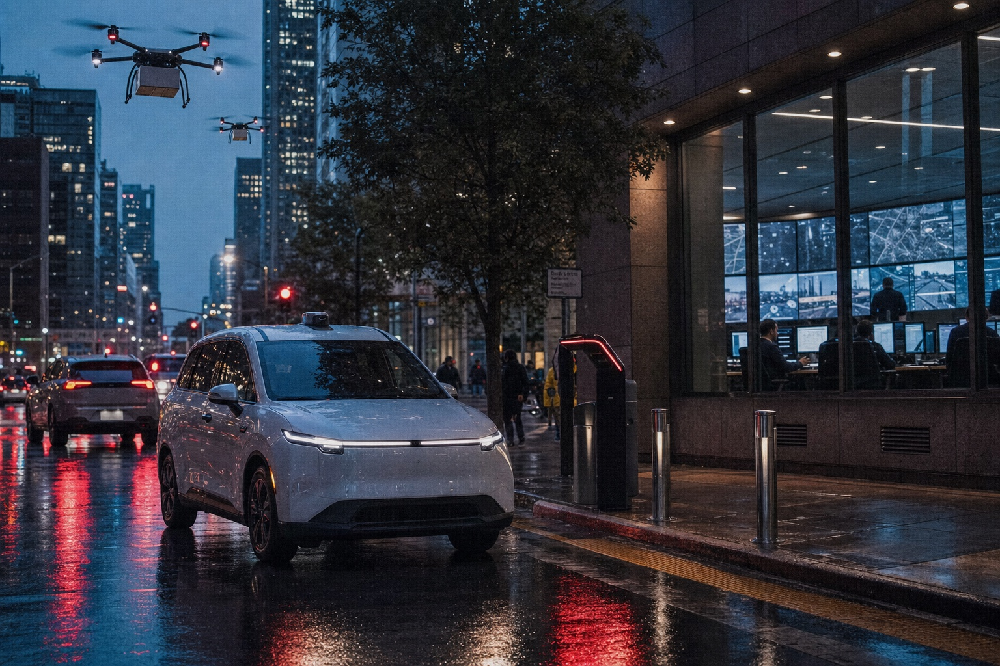
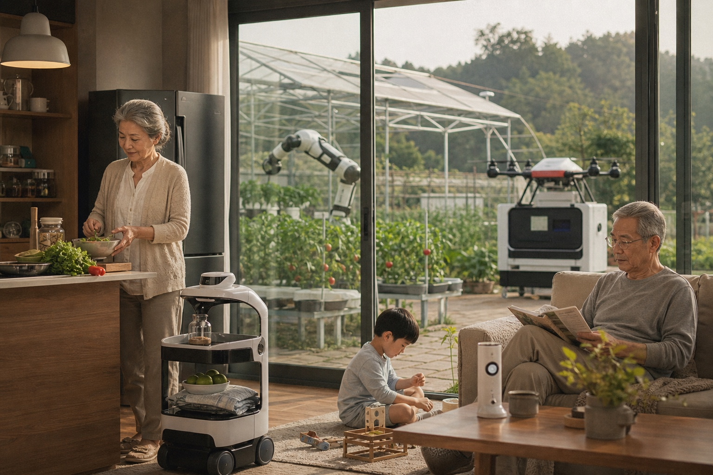
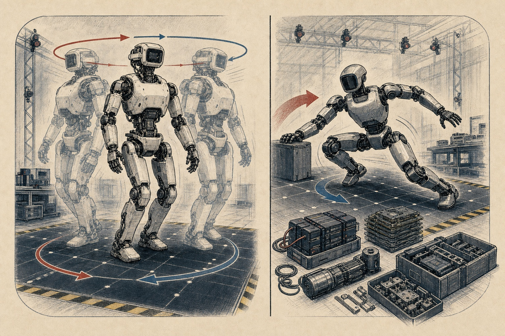
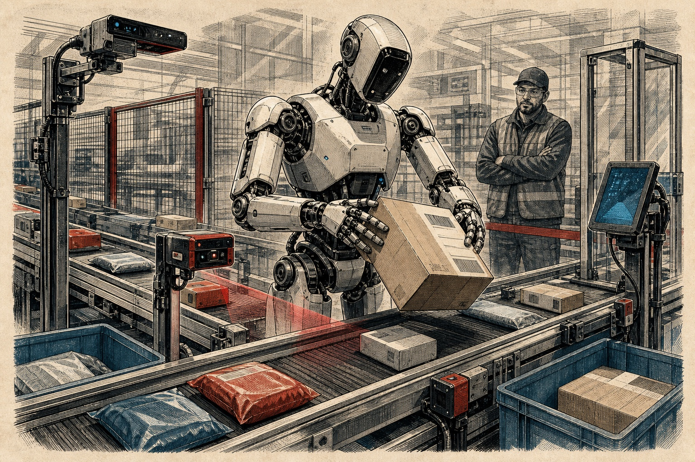
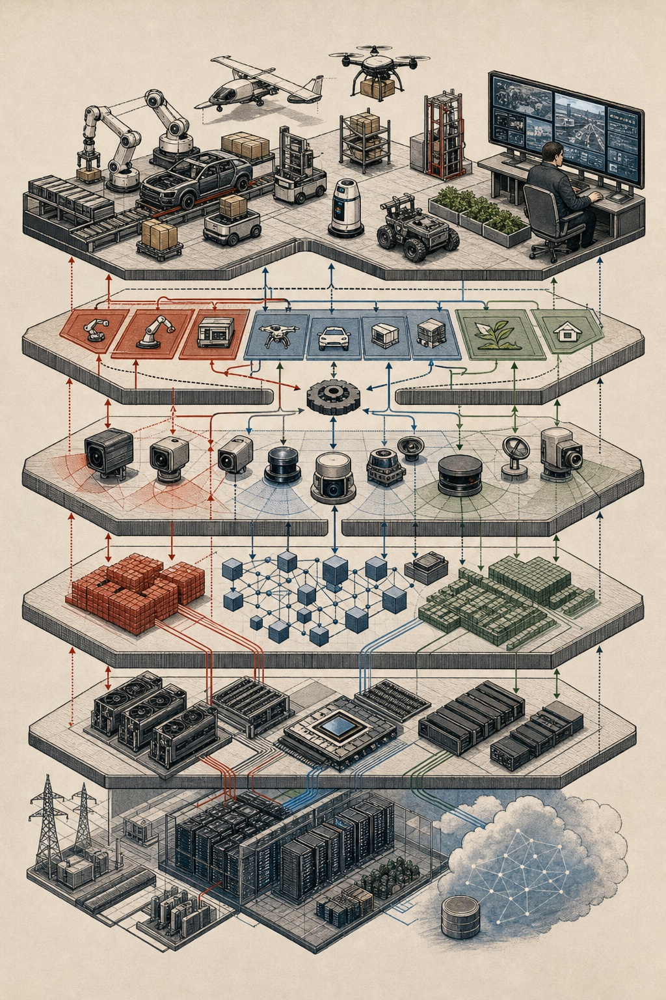

The trade begins with capture and ends with desire. In between are airports, ports, forged permits, encrypted chats, online listings, weak laws, and animals treated as cargo with a heartbeat.
The hard part is no longer whether small aircraft can fly useful missions. It is whether law, air traffic systems, police oversight, war planning and supply chains can see and govern the low-altitude sky now filling up.
One month before the biggest men's World Cup ever opens, the story is not only soccer. It is tickets, heat, grass, transit, security, borders, social media, history, and whether North America can make 104 matches feel like one public event.
Spain's 30-tonne Arconian seizure was the loudest signal yet. The deeper story is demand, trafficking logistics, British consumers, port corruption, public health, violence and enforcement trying to keep up.
From the Maduro raid to the Iran war, Hormuz, cartel boat strikes, classified AI and the defense factory floor, 2026 shows how U.S. power now moves through operations, logistics and production.
Alaska's Tracy Arm megatsunami sent water nearly 1,580 feet up a fjord wall. The real story is the narrow escape: glacier retreat, cruise traffic, seismic whispers, and a warning system built for a slower kind of wave.
Wildfire, hurricane, flood, and heat risk are no longer abstract climate charts. They are arriving as premiums, deductibles, cancellations, FAIR Plan growth, and household math.
Automation ReviewBelow The FoldSection A / Robots, Agents, Work / May 2026
Systems desk / Work, streets, labs, war rooms, homes
The Automation Ledger
The biggest automation story is not one robot. It is software agents, sensor networks, industrial robots, humanoids, driverless fleets, labs, warehouses, and ordinary workplaces all moving at once.
Vol. 1 / Section A
The machine is leaving the demo room and entering the shift schedule.
AI / Robotics / Labor
U.S. firms19.8%
used AI in the Census Bureau collection period ending May 3, 2026.
Factories542K
industrial robots were installed worldwide in 2024, IFR says.
Robot stock4.664M
industrial robots were operating worldwide in 2024.
Amazon fleet1M
robots deployed across more than 300 facilities, according to Amazon.
Lead feature / The shift
Automation Is Becoming a Management Layer
Business AI is already past the curiosity stage: Census Bureau BTOS data from Dec. 14, 2025 to May 3, 2026 put overall U.S. business AI use between 17% and 20%.
Large firms are farther ahead: 37% of companies with at least 250 employees and 32% of companies with 100 to 249 employees reported using AI in the May 3, 2026 Census collection period.
Gallup's Q4 2025 workplace survey found 26% of U.S. employees using AI at work at least a few times a week and 12% using it daily; remote-capable roles were at 66% total use, while non-remote-capable roles were at 32%.

A generated cross-section of the automation stack: warehouses, roads, hospitals, farms, homes, defense rooms, and data centers all feeding one operating system.
What changed / Scale
The Robot Count Is No Longer Small
IFR's World Robotics 2025 report counted 542,000 industrial robots installed in 2024, with annual installations above 500,000 for the fourth straight year.
China represented 54% of global industrial robot deployments in 2024, installed 295,000 units, and had more than 2 million industrial robots operating.
Professional service robots are spreading fastest in logistics: IFR counted almost 200,000 professional service robots sold in 2024, including 102,900 transportation and logistics units.
Field map
Where the System Is Already Moving

Warehouses are the first public proof of physical automation at boring scale.
Logistics / Robotic fleets
The Warehouse Is the Lab
Amazon says it has deployed its one millionth operations robot, with the fleet spread across more than 300 facilities. Its DeepFleet model is built to coordinate robot movement and improve fleet travel efficiency by 10%.
1M
robots deployed; the millionth went to a Japan fulfillment center.
300+
sites use the operations robot fleet.
10%
less robot travel time is DeepFleet's routing target.
75%
faster inventory ID and storage is Sequoia's claim.
25%
faster order processing is Sequoia's paired target.
30%
more reliability, maintenance, and engineering roles in Shreveport.

Streets / Robotaxis
The Car Is Becoming a Fleet Worker
Waymo says its service now handles more than half a million fully autonomous trips a week across 10 U.S. cities and logs more than 4 million fully autonomous miles weekly.
Health / Labs
The Lab Bench Is a Conveyor
IFR counted about 16,700 medical robots sold in 2024, up 91%; sales for diagnostics and medical laboratory analysis rose 610% in its supplier sample.
Defense / Sensors
War Automation Looks Like a Control Room
The near-term defense pattern is not one killer machine; it is drones, counter-drone sensors, unmanned ground vehicles, logistics software, and command tools trying to shorten the time between detection and decision.

Home / Food
The Domestic Version Is Quiet
IFR's sample counted close to 20 million consumer service robots sold in 2024, up 11%; domestic floor-cleaning and lawn robots still dwarf the humanoid dream on unit volume.
Humanoid file
The Body Is Becoming a Platform

The Boston Dynamics/Unitree split: one side is industrial-grade motion; the other is the price floor dropping fast.
Boston Dynamics / Atlas
The Wild Rotation Demo Has a Practical Point
Atlas is marketed for industrial material handling, barcode scanning, workflow integration, autonomous charging, and battery swapping. Boston Dynamics lists 56 degrees of freedom, 4 hours of battery life, a 50 kg instant capacity, and a 30 kg sustained capacity. The full-turn torso/head rotation people pass around online is not the point by itself; the point is that an electric humanoid does not have to copy a human spine to work in human-shaped spaces.
Unitree / G1
The Cheap Humanoid Is a Different Shock
Unitree lists the G1 from $13,500 before tax and shipping, about 35 kg with battery, a 1.32 meter standing height, 23 to 43 joint degrees of freedom depending on configuration, about 2 hours of battery life, depth camera plus 3D LiDAR, Wi-Fi 6, and Bluetooth 5.2. That does not make it a household worker; it makes the experimentation price look completely different.
Live robot sorting
Figure AI and the Package Problem
Figure's Helix logistics update is useful because package sorting is ugly in the real way: bags wrinkle, labels bend, envelopes slide, boxes rotate, and the next object is never quite the same as the last one.
In June 2025, Figure said Helix could handle deformable poly bags and flat envelopes as well as rigid boxes, orient shipping labels for scanning about 95% of the time, and cut average handling time from roughly five seconds to about four seconds per package.
The company also said the training set grew from 10 to 60 hours of demonstrations and that the system added visual memory and force feedback, which is the difference between a cool clip and a robot that can remember, feel, and recover.

A generated illustration of the Figure-style sorting problem: bendy packages, barcode orientation, scanner geometry, and human supervision in one cell.
The stack
The Part You Cannot Photograph

Most automation is a stack: data, chips, sensors, model policy, fleet software, physical machine, exception handling, and audit trail.
Layer 01
Data and Compute
Robots need maps, models, simulations, camera streams, sensor logs, and fleet telemetry before the arm or wheel does anything useful.
Layer 02
Perception
Cameras, depth sensors, LiDAR, barcode readers, microphones, and force sensors decide whether the machine knows what is actually in front of it.
Layer 03
Motion
The visible robot is the last layer: wheels, arms, grippers, drones, humanoid joints, chargers, batteries, and safety cages.
Layer 04
Judgment
The hard cases still route to people: damaged packages, blocked lanes, unusual patients, edge-case traffic, escalations, audits, and liability.
Labor ledger
The Job Story Is Uneven, Not Simple
Workplace AI
Gallup found technology workers at 77% total workplace AI use in Q4 2025, finance at 64%, higher education at 63%, professional services at 62%, K-12 education at 56%, manufacturing around 43%, and retail at 33%.
Firm size
Census found AI use under 20% among firms with four or fewer employees, which means the smallest businesses are not living in the same automation economy as the largest firms.
Training
Amazon says more than 700,000 employees have been upskilled through programs related to the future of work; the hard part is whether training arrives before the workflow changes.
Rule of thumb
The clean automation story is replacement. The real one is task transfer: software drafts, robots move, sensors watch, humans fix exceptions, and managers redesign the job around the handoff.
Design note: Generated photoreal images show composite scenes; generated illustrations cover the humanoid and stack diagrams. The numbers in the prose and stat cards are source-backed text, not embedded inside the images.


 Systems • Deep Dive
The Cold Chain Is the Invisible Machine That Feeds the World
Systems • Deep Dive
The Cold Chain Is the Invisible Machine That Feeds the World
 Memory • Essay
The Internet Is Eating Its Own Memory
Memory • Essay
The Internet Is Eating Its Own Memory
 Education • Feature
The Phone-Free School Day Is a Live Experiment
Education • Feature
The Phone-Free School Day Is a Live Experiment
 Health • Report
The Next Public-Health System Is the Room You Are In
Health • Report
The Next Public-Health System Is the Room You Are In
 Technology • Analysis
The Battery Is Becoming the Grid
Technology • Analysis
The Battery Is Becoming the Grid
 Science • Explainer
The Ocean Has a Fever, and the Thermometer Is Everywhere
Science • Explainer
The Ocean Has a Fever, and the Thermometer Is Everywhere
 Sports • Feature
Texas Hold’em Gets Its Prime-Time Moment Back
Sports • Feature
Texas Hold’em Gets Its Prime-Time Moment Back
 Technology • Report
The Pentagon Just Let Big AI Into the Classified Room
Technology • Report
The Pentagon Just Let Big AI Into the Classified Room
 Culture • Food Feature
The Last Month at Atla
Culture • Food Feature
The Last Month at Atla
 Technology • Analysis
The Trial Over OpenAI’s Soul
Technology • Analysis
The Trial Over OpenAI’s Soul
 Politics / Security • Daily Issue
A Gunman, a Ballroom, and a Shaken Washington
Politics / Security • Daily Issue
A Gunman, a Ballroom, and a Shaken Washington
 World • Daily Issue
The Strait of Hormuz Is Now the World’s Oil Panic Button
World • Daily Issue
The Strait of Hormuz Is Now the World’s Oil Panic Button
 World • Daily Issue
Darfur’s Burn Scars Are Starting to Read Like a Food Map
World • Daily Issue
Darfur’s Burn Scars Are Starting to Read Like a Food Map
 World • Daily Issue
Nairobi’s Drains Are Running Out of Room
World • Daily Issue
Nairobi’s Drains Are Running Out of Room
 Money • Daily Issue
3.98 Million Home Sales Turn Spring Open Houses Into Math Class
Money • Daily Issue
3.98 Million Home Sales Turn Spring Open Houses Into Math Class